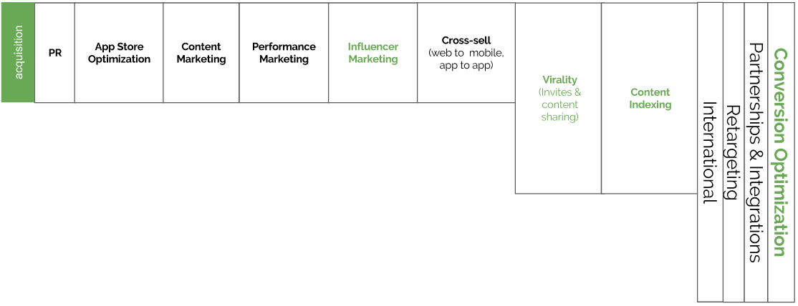

增长栈的获客层包括为移动应用程序获取新用户而进行的活动，无论是通过付费的、自拥有的渠道。
公关（PR）
PR活动包括制作和宣传有新闻价值的报道，希望吸引记者报道这些报道，而不是在任何一天都有大量相互竞争的报道。最终，执行良好的内容营销可能会随着时间的推移带来更可靠的回报，但创造性的公关可以为有机增长提供一种重要的——如果是线性的，很难归因于的——推动。由于公关通常不是初创公司创始人和数据驱动型增长营销人员的核心能力，了解当地/行业媒体格局的公关机构通常会参与其中，有时是以业绩为基础的(例如，按媒体提及次数付费)。
应用商店优化 App Store Optimization (ASO)
ASO包含三项核心活动：
App Store转换率优化：
由于应用程序商店是几乎所有消费者移动应用程序的分发网关，因此用于在应用程序商店中推广应用程序或游戏的资产（屏幕截图，标题，关键字，描述，应用程序图标）进行系统测试，以优化转换率。商店页面访问'到'应用安装'是一项放大所有其他采购活动影响的活动。如果应用商店页面转换增加，性能营销支出将进一步扩大;因为点击广告的用户将最终安装该应用，每次安装费用（CPI）将下降。
App Store搜索优化
针对性能最佳的关键字进行优化，以吸引高搜索量并与应用的目标受众进行良好转换，这是一个完善和实验的过程，需要定期审核才能保持领先于竞争对手。 对于某些应用，应用商店搜索占其应用商店列表的有机流量的很大比例（高达80％），而在其他情况下，搜索在应用发现中扮演的角色较小。 在任何情况下，通过在相关关键字的搜索结果中高度排名，可以至少在某种程度上增加用户获取。
应用商店特色:
所有主要的应用程序商店都有一些特色的概念，编辑团队根据不同的编辑标准，为选定的应用程序提供显著的临时广告横幅风格。获得苹果、谷歌、亚马逊和其他平台所有者的支持，可以大大(而且是免费的)促进用户获取。具有特色的应用程序的发布者通常会花时间与相关的应用程序商店经理建立直接联系，并定期向他们提供有关即将发布的重要应用程序的及时信息，尽管情况并非总是如此。
有许多东西可以增加应用程序的表现的机会:确保应用程序UI是平台设计指导方针,支持新特性或硬件平台,创建自定义内容为特殊日历事件,可以绑定到应用程序商店促销活动,并确保应用程序是免费的从错误和崩溃是其中的一些。最终，编辑团队希望在他们的商店中呈现出最高质量的应用程序，并且很少(如果有的话)提供有特色的保证。
内容营销（Content Marketing）
内容营销需要投入大量的时间和资源才能获得回报，但一个强大的内容营销计划可以提供一个重要的、可持续的、不断增长的(尽管是线性的)新用户来源。
内容营销可以采取多种形式,但涉及代的博客,新闻,信息图表,艺术品,提示和技巧,十大列表和其他类型的在线内容,吸引目标受众为核心的移动产品(应用程序、游戏或应用程序被提拔的星座)和应包括突出链接的应用程序商店应用程序可以下载。
例如:如果所讨论的产品是一个预算应用程序，那么将为那些想要省钱或管理财务的人生成创造性的、引人入胜的内容:这可能包括省钱的小窍门，关于预算过程的信息图表等等。
内容营销帖子通常在公司博客等自有媒体上发布，但也可以通过社交渠道、电子邮件等方式分享，以扩大影响力。随着时间的推移,与普通用户发表的内容,文章应该爬上排名网页搜索相关主题,推动更多有机搜索流量的帖子和随后的应用。内容营销建立品牌知名度,可以明显提高收购,但可能需要几个月开始交付用户。
业绩营销（Performance marketing）
通过移动显示/视频广告网络，付费搜索广告，Facebook，Instagram，Twitter和其他渠道上的应用安装广告进行的业绩营销提供了比大多数其他渠道更积极地扩大用户获取的机会，尽管价格昂贵。
通常情况下，性能营销成为一种可行的策略，用于通过应用程序内广告，应用程序内购买，订阅或某种组合从至少部分用户群中获利的产品，以及当新用户的客户获取成本（CAC）时给定的营销活动产生正投资回报率（ROI），通过预测某个置信区间内用户的生命周期价值（LTV）来计算。
效果营销广告系列通常涉及针对其他广告客户针对每千次展示费用（每千次展示费用），每次点击费用（每次点击费用），CPI（每次安装费用）或每次转化费用（每次操作费用：例如购买商品或订阅）进行广告展示位置的出价）基础。
影响者营销(Influencer Marketing)
从最广泛的意义上讲，“影响者营销”一词涵盖了广泛的活动，涉及与有影响力的个人或团体合作，以获得品牌或产品宣传或对他们的认可。这个概念远非新鲜事：烟草公司几代人一直通过电影明星影响我们，体育人士的商业赞助被认为是理所当然的，等等。
与影响者合作传统上很难衡量，耗时且可能很昂贵，但往往仍然有效。以性能为中心的影响者平台的出现，将广告商与新一代独立影响者联系起来 - 包括博主，YouTube明星，Instagram用户和Snapchatters--已经使曾经由大品牌和名人代理主导的空间民主化。现在有可能将影响者营销扩展到影响者群体，这些影响者群体的影响范围较小 - 尽管是对潜在利基话题感兴趣的忠实观众 - 而不是拥有数千万粉丝的超级明星。同时，嵌入式跟踪链接以及展示次数和点击次数的实时报告使营销人员能够通过其影响力营销支出更加数据化;他们可以计算转换率，每次安装费用（CPI）和其他效果指标。
影响者营销越来越多地成为一种表现营销活动，增加或取代传统的移动应用安装活动，以相同的条件对Facebook和DSP进行评估。在许多情况下，这些发展已经将影响者营销从品牌营销活动转变为可衡量的增长策略。
分销优惠(Distribution Deals)
分销伙伴关系，提供了一个强大的网络或品牌的庞大受众/用户群，可以在一夜之间大大提高覆盖面。一般来说，作为一家刚刚起步的小公司，它们更难实现，因为必须进行某种价值交换，而更有吸引力的增长合作往往是与拥有数百万用户的大公司合作。
几个分销协议的例子包括伙伴关系与移动通信运营商(电信推广你的应用的用户,以换取利润的减少,或者是一个固定费用),交通交流网站,预装(可能是定制的)版本的应用程序的智能手机制造商,智能电视或者其他连接设备。
病毒传播(Viral Loops)
虚拟的“病毒性”概念难以人为地产生;最终，持续的病毒式增长很可能源于强大的产品或引人入胜的内容。但是，仔细关注内容共享，项目赠送或邀请流程，可以为病毒式传播创造合适的条件。
每个频道（例如电子邮件，移动消息网络，社交网络，如Facebook，Twitter等）将根据达到的用户数量显示不同的动态（例如，一对一与一对多，轻松和可能性由接收者等在网络中重新发布的，这些份额的转换率以及通过该信道关闭循环并获得新用户所花费的平均时间。控制病毒循环性能的两个关键变量是K因子（平均每个邀请/共享达到x转换率的用户数）和循环时间（平均循环所需的平均时间）。在这两者之中，缩短周期时间会使生长轨迹更加显着增加，因为随着时间的推移病毒化合物会增加。
交叉销售(Cross-Sell)
当现有用户库存在于另一个拥有的产品或平台上时（例如桌面网络应用程序，移动网络应用程序，公司产品组合中的另一个应用程序或游戏等），存在这些属性之间交叉推广的机会，以便将用户引导至新的 - 启动应用程序，或将桌面/移动网络用户迁移到原生移动设备，在那里还有其他方式可以吸引，保留和利用它们。
从一个拥有的房产到另一个房产的交通流量是“免费”用户的一个重要来源，他们已经熟悉产品/品牌，因此可能比全新的用户更容易保留。 交叉销售对于寿命短的产品特别有用，用户可能会在一段时间后对体验感到厌倦; 游戏发行商广泛采用交叉销售策略，以便在旧游戏到达保质期结束之前，将用户投放到其投资组合中新发布的游戏中。
内容索引(Content Indexing)
内容索引深层链接原子内容，主要通过Google App Indexing和改进的iOS 9推出的Apple Search提供了新的机会来推动应用程序发现以及将现有用户直接引回应用程序。
在实施连贯且优化的搜索优化策略时，确保网络和移动网络内容也已正确编入索引并映射到应用内的相同内容非常重要，因为Google目前仍需要匹配网络内容才能在应用内编制内容（尽管如此随着网络的相关性进一步下降，未来可能会发生变化）。
转换优化的响应式登录页面和Facebook页面也不应被忽视作为推动应用下载的其他渠道，也应该针对搜索进行优化，尽管完整的内容营销计划可能会产生更强的结果（但也需要更多的创造力和努力）。纯广告登陆页面。